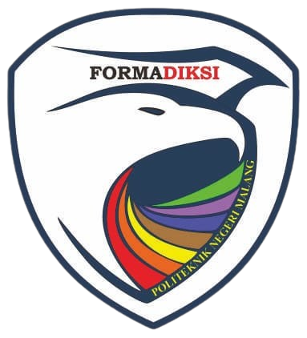

FORMADIKSI POLINEMA PRESENTS
Gali Potensi Wujudkan Inovasi
INFORMASI LOMBA
Daftarkan timmu dan ikuti proses monitoring untuk memastikan setiap tahapan lomba berjalan sesuai ketentuan.
Kumpulkan proposal PKM terbaikmu sesuai format dan ketentuan yang tercantum dalam Buku Panduan.
Proposal peserta akan dinilai oleh dewan juri berdasarkan kriteria penilaian yang telah ditetapkan.
Siap melangkah ke tahap berikutnya? Nantikan pengumuman peserta yang berhasil menjadi finalis Lomba PKM Formadiksi 2026.
Finalis akan mendapatkan informasi lengkap mengenai teknis pelaksanaan dan persiapan menuju tahap presentasi.
Saatnya presentasikan ide terbaikmu dan tunjukkan inovasi yang kamu kembangkan di hadapan dewan juri.
BUTUH BANTUAN?